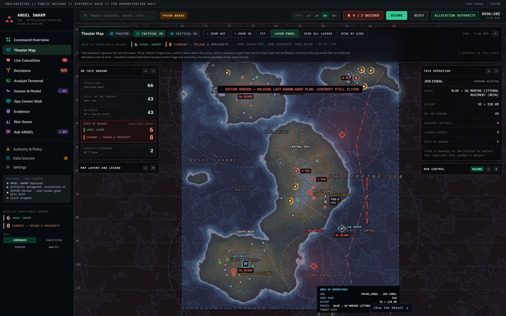

Composited onto a real ANGEL SWARM screenshot — JOA CORAL, T+96, tactical 2D, captured from the running v6.2 build. The two new elements are drawn in the position and at the size they would actually occupy. Everything else in the picture is the live application.

Theirs is four fixed stages — source, pickup, casualty, return. Yours are multi-stop, so the strip carries what a chained sortie actually did: every casualty on the run, what each one received, and how much margin was left against their deadline. That last column is something their version has no equivalent for.
Why it earns its place: a route line on a map shows you where an aircraft went. This shows you what it was for — and the slack column is the whole argument of ANGEL SWARM in four characters. Green means it beat the deadline; amber means it only just did.
The glyphs are the same shapes as the map pins, so the strip and the map teach each other — that is the part of their design worth copying, not the styling.
They badge their basemap MAPBOX · SATELLITE + 3D TERRAIN. Same idea, but yours states something theirs cannot.
Their equivalent chip is an admission — it names a dependency on api.mapbox.com and a paid token. Pull their network cable and their map degrades to markers floating on a blank cyan grid, captioned "OFFLINE OPERATIONAL PLOT · NETWORK BASEMAP UNAVAILABLE". That is in their code, not my inference.
Yours is a claim. The terrain under that map — hypsometric tints, hillshade, 25 m contours, bathymetry, coastline, drainage traced by steepest descent — is computed from the scenario's own elevation field in basemap.js. Zero bytes fetched. A judge who pulls the cable sees the identical picture, and this chip is what invites them to try.
| Item | Where it lives | Touches a renderer? | Effort |
|---|---|---|---|
| Route-stage strip | Design template, floating panel layer | No | 2–3 h |
| Provenance chip | Design template, map corner | No | 30–60 min |
Neither goes near map.js, geo3d.js, theater3d.js, angel-map.js or theater.js — the files carrying this week's WebGL context-loss, panel-inset and responsive fixes. That is deliberate and it is why these two are the only things I would take.